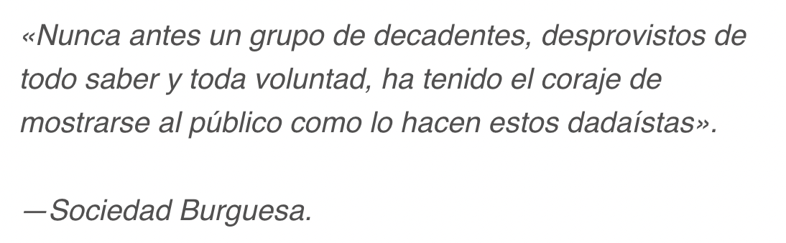

¿Qué es el Dadaísmo?
Es un movimiento artístico y filosófico que parte de lo espontáneo e irracional, dejando de lado lo que se creía que era lógico. Se considera que fue uno de los movimientos más relevantes debido al impulso que hizo que tomara la sociedad a la hora de expresarse libremente por medio de las bellas artes.
Durante sus inicios, era conocido como el anti arte, debido a sus inusuales propuestas artísticas, las cuales eran realizadas con técnicas poco convencionales.
¿Qué significa el término dadaísmo?
Su nombre es de origen francés y proviene de la palabra dadaísme. Esta palabra está compuesta por el sufijo “isme” sobre la palabra “dada”, la cual es usada para referirse a un juguete formado por un palo y una cabeza de caballo en la punta. Sí, así como lees. Esta palabra fue escogida al azar por el poeta rumano Tristán Tzara para denominar este movimiento.
Origen del Dadaísmo
El movimiento dadaísta fue fundado por Tristan Tzara, junto a otros artistas como lo fueron Hugo Ball y Hans Arp. Este surge en 1916, en el contexto de la Primera Guerra Mundial, en un café de la ciudad de Zúrich, Europa.
En este espacio estaba permitido recitar poemas y hacer presentaciones en vivo, lo que llamó la atención de los cantantes. Debido a esto, se convirtió en una especie de refugio después de que estallara la guerra.
La ciudad se volvió famosa, por lo que reunía una gran variedad de personas de diferentes escuelas, como el expresionismo alemán, el cubismo francés y el futurismo italiano. Al contrario de lo que piensan muchas personas, el dadaísmo no surgió como un movimiento rebelde, sino que apareció con el fin de cuestionar el concepto que existía de arte en la época de la Guerra.
Historia del Dadaísmo
Hugo Ball, uno de los creadores de este movimiento, era director de teatro y, junto a su esposa, decidieron crear un café literario en donde pudieran estar todos los artistas que habían sido exiliados. Y así fue que, el 1 de febrero del año 1916 se inauguró el Cabaret Voltaire, lugar donde Tristán y otros artistas se reunieron para formar al dadaísmo.
Difusión del dadaísmo
La primera celebración del movimiento dadaísta se llevó a cabo el 5 de febrero de 1916 en el Cabaret Voltaire. Esta consistió en una presentación música rusa, música negra y exposiciones de arte. Fue tanto su éxito que en 1917 se inauguró la Galería Dadá y Tristán Tzara comenzó a difundirla.
El dadaísmo fue tomado como una rebelión en donde se catalogó como un movimiento antiartístico, el cual pretendía romper todos los sistemas y códigos establecidos en el mundo del arte. En busca de lograr sus objetivos, no paso mucho tiempo hasta que empezó a expandirse a las ciudades de Barcelona, Berlín, Colonia, Nueva York y París.
El escándalo del dadaísmo
La verdad es que el dadaísmo fue un movimiento bastante escandaloso que coloco a más de una figura de autoridad en alerta. Se publicaban afirmaciones sobre los practicantes del dadaísmo del siguiente estilo:

En el año 1919, al haber finalizado la Primera Guerra Mundial, el movimiento dadaísta se trasladó a París, donde obtuvo su punto máximo de popularidad antes de llegar a sus últimos días. El dadaísmo fue desgastándose debido a las nuevas ideas que estaban surgiendo, como las de André Bretón, el cual se inspiró en este movimiento para crear el que sería su sucesor, el famoso Surrealismo.
Características del Dadaísmo
Al ser un estilo tan definido que tenía bien establecidas sus bases principales, cuenta con varias características que hicieron posible los cambios que logro en la sociedad. Estas características son las siguientes:
- Movimiento vanguardista y de protesta.
- Sus ideales se basan en la espontaneidad e improvisación.
- Buscan el caos y el desorden.
- El contenido dadaísta era ilógico, carecía de sentido alguno.
- Su carácter era destructivo, imponente, irónico, agresivo y pesimista.
- Críticas al capitalismo y el consumismo.
- Rechazaban al cien por ciento los valores burgueses, el nacionalismo y el materialismo.
REFERENTES
En cuanto a sus figuras, destacan en Zurich Arp y Picabia; en Nueva York, Duchamp, y en París, André Breton y Tristán Tzara.